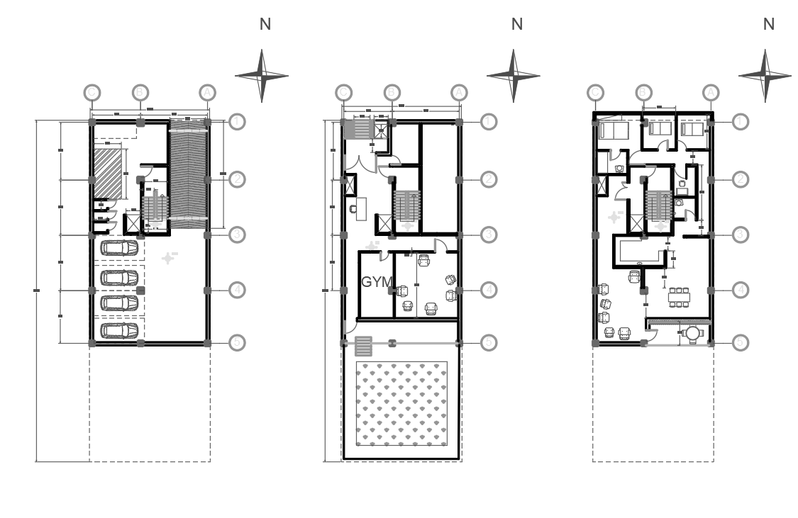
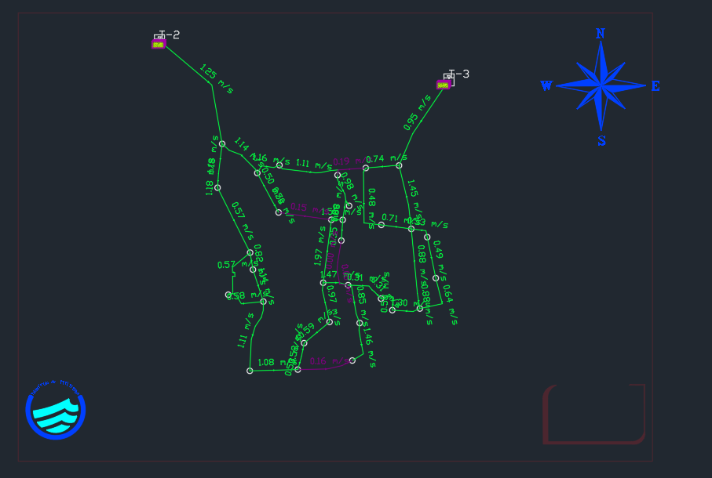

Civil Projects

Architectural Design
plane and section for a given project according to site situations . complying laws on building construction was considered

Water and Sewer transfer network
Designing a water and sewer transfer network for 16 districts of Tehran as an educational project.

Structural Calculations and Design
Structural design and analysis considering multiple loading scenarios including dead loads, live loads, snow, wind, and seismic forces - compliant with both ASTM standards and Iranian building codes (Standard No. 2800).